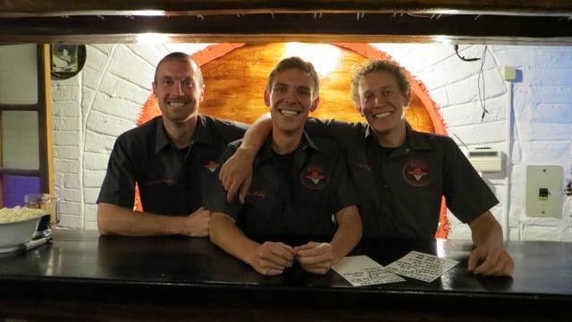
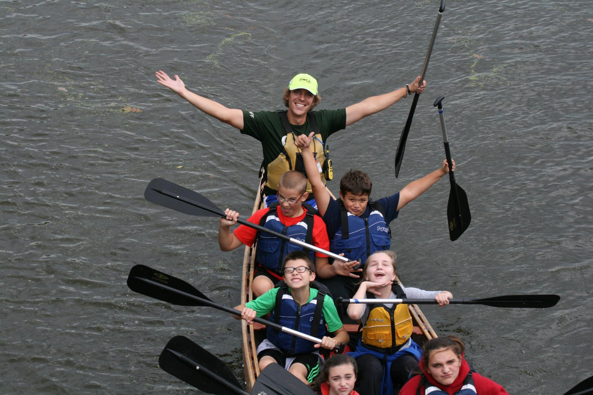
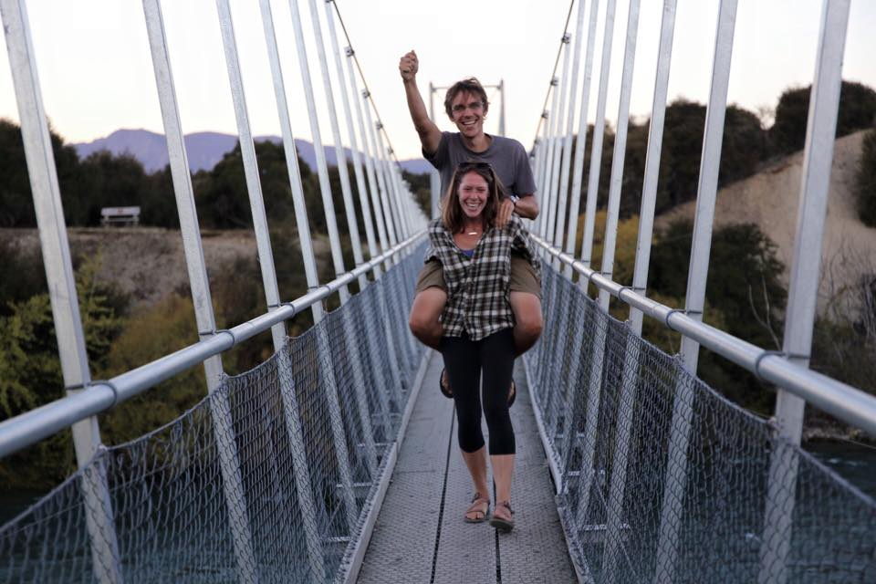
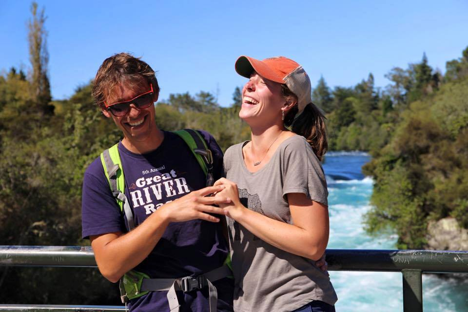
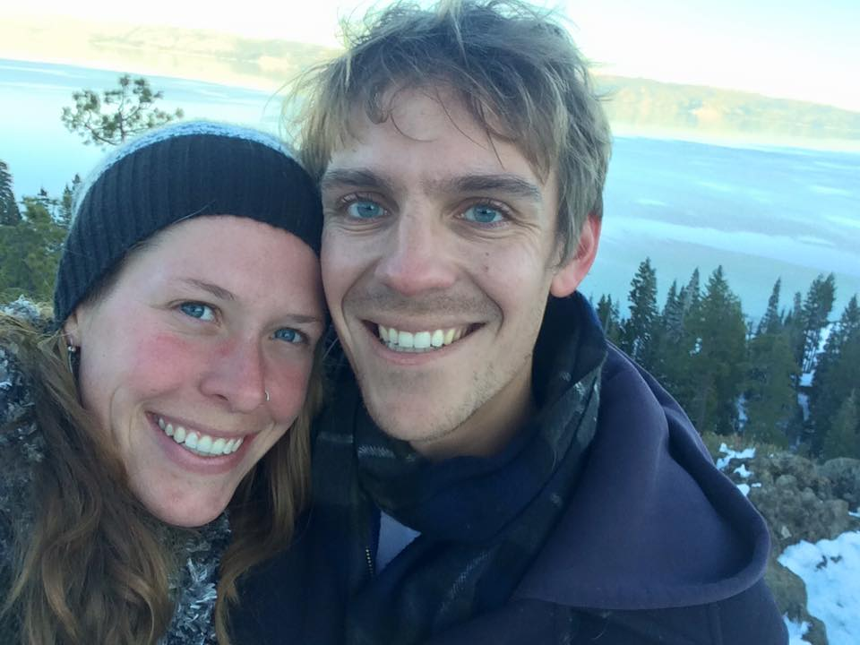

Dan Meloy was born on September 2nd, 1988. At the time of writing this page he was 31 years old. 31 years is a long time to live, and Dan has done a lot of living! His sister Lindsay (who we'll learn more about further down) says he's already lived enough to fill multiple lifetimes! Dan doesn't know about all that, but can nonetheless appreciate and be grateful for the many opportunities and experiences he's been lucky enough to be a part of. In the following page you can expect to learn more about:
Dan's work and travel experiences
Dan's hobbies and interests
Dan's family and personal life
Working, Traveling, Experiencing!
They say variety is the spice of life, and Dan doubles down on that statement. He's lived and worked on 4 different continents at one point or another! In 2010 Dan lived in Bangkok, Thailand as a student attending Thammasat University. Although he only lived there for 5 months, he tried to experience as much of SE Asia as possible, traveling to Laos, Cambodia, Vietnam, Malaysia, India, and of course much of Thailand. While SE Asia is a very affordable place to live and travel, Dan supplemented his travel funds by working as an English teacher in three day "live-away" English camps. These camps would host anywhere from 70-200 Thai students, ranging from elementary school to high school, that would come participate in games, activities, and classtime activities to improve their English skills.
The seal of Thammasat University
Upon graduating from Willamette University in 2011, Dan had laid out plans for what would be in store for him. In February 2012 he moved down to Quito, Ecuador to open Community Hostel. He opened the business alongside some classmates from Willamette, and they experienced great success! Community Hostel became Quito's #1 ranked hostel in it's fourth month of business! While working the hostel, Dan and his business partners realized that there was no good craft beer in Ecuador, so in 2013 they opened Bandido Brewing. Since its inception Bandido Brewing has been tremendously well received, winning medals in beer cups and competitions in both North and South America. However, despite the success his businesses were experiencing, there were challenges that came with living in Ecuador, and ultimately Dan decided to shake hands and say good bye.

Dan with his Bandido Brewing business partners
The year was 2015, and Dan, always looking for the next experience, changed things up in a big way by moving to Minnesota to become a wilderness guide and outdoor educator with a non-profit called Wilderness Inquiry. Wilderness Inquiry works to make the outdoors accessible and enjoyable to people of all backgrounds and abilities. This ranged from leading day long outdoor field trips for potentially hundreds of students at a time, to getting underserved communities experiencing the outdoors within their own urban environments, to leading 5 to 7 day backcountry wilderness trips in the Boundary Waters Canoe Area Wilderness. The latter type of trip was Dan's primary role, and he specialized in faciliating these multi-day backcountry trips for people with various cognitive and physical developmental disabilities. Working for Wilderness Inquiry was one of the most rewarding and fulfilling jobs Dan has ever had, and he knows he'll look back fondly on those times for the rest of his life.

Dan leading a canoe tripDan leading another canoe trip
2017 marked the next big change for Dan. He moved to New Zealand for the entire year, traveling during the summer months and working through the winter. The entire year was the non-stop bliss of responsibility-free exploration. That is, it was until the time came to get a job to help pay for travels. Unbeknownst to him, Dan's first job turned out to be as big of an adventure as the rest of his time in New Zealand. What started as a simple waitstaff position in a Thai restuarant ended up being much more stressful. The owner of the restaurant was in a bit of a financial pinch, and, without more than a week's notice to Dan, left the country to go to Thailand to find investors, leaving the entire resturant in Dan's (quite unwilling) hands. Despite his every intention to not take responsibility for the business, Dan owned and operated it for two full months without knowing when (or if!) its rightful owner was coming back.
Enjoying the mountains in New ZealandHiking under a rainbow in the New Zealand highlands
Finally, in 2018, Dan moved to Oregon to begin the phase of life he finds himself in now. He got a job at Intel working as a hardware technician in a server lab. This was his first foray into the tech industry, and he knew there was a lot of potential for him here. Ultimately his position at Intel didn't provide enough growth for his taste, so he left in August of 2019 to begin his web development career by attending Alchemy Code Lab!
Enjoying the Oregon coast
Hobbies
In addition to traveling the world, Dan is a man of many interests. He loves music, and can play many instruments, including:
Guitar
Piano
Cello
Ukelele
Drums
His love of the arts isn't limited to music though, and Dan has many years' of practice in pottery and steel sculture. Ceramics is his favorite form of art. While in New Zealand he was lucky enough to live just down the street from the community pottery center, where he was a member and got to use the space as often as he likes!
Dan, being a naturally quite competitive person, is also a big lover of games. He plays video games, and in particular a game called League of Legends, a highly competitive online game, but also enjoys all sorts of card and board games. A couple of his current favorite games are Azul and Raiders of the North Sea.
Dan playing the guitar
Family and Personal Life
Dan was born in Redwood City, California, but moved from town to town while still very young. In the second grade he and his family moved to Boise, Idaho, where he grew up and still considers "home" to be. Dan has a twin sister, Lindsay. Lindsay is older than him by only two minutes! His mother is named Susan and his father is Michael. Lindsay and Susan both still live in Boise, which is great because Dan gets to go home a few times a year to be with his family and old friends who still live there. Michael died in 2011, while Dan was in his last semester of college, at the age of 68 of a rare and sudden heart condition called Giant Cell Myocarditis. He was a loving father and is remembered everyday by those he left behind.
Dan with his mom and sister
Dan is lucky enough to be partners with a wonderful lady named Maddie. The two of them met in 2014 in Ecuador when she came into his brewery one night. In the almost six years that they've been together they have traveled the world together, from Ecuador to Minnesota to New Zealand and finally to Oregon. Maddie works for a non-profit called Camp Fire Columbia where she runs afterschool programs for at-risk youth.

Maddie giving Dan a piggyback in New Zealand

Dan and Maddie tend to get giggly

Dan and Maddie in the winter
Think you know Dan? Take his quiz and find out!
All of the information needed to pass his quiz can be found in the paragraphs above. Let's see what you learned about Dan!